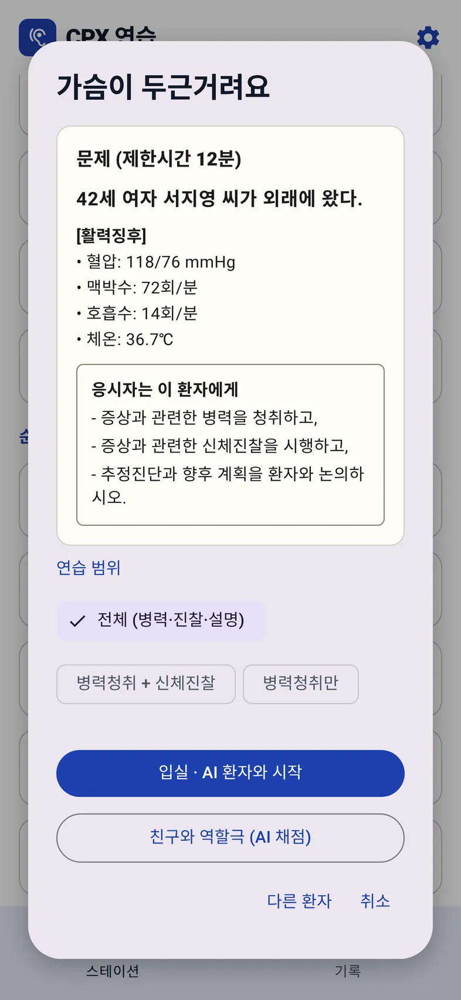
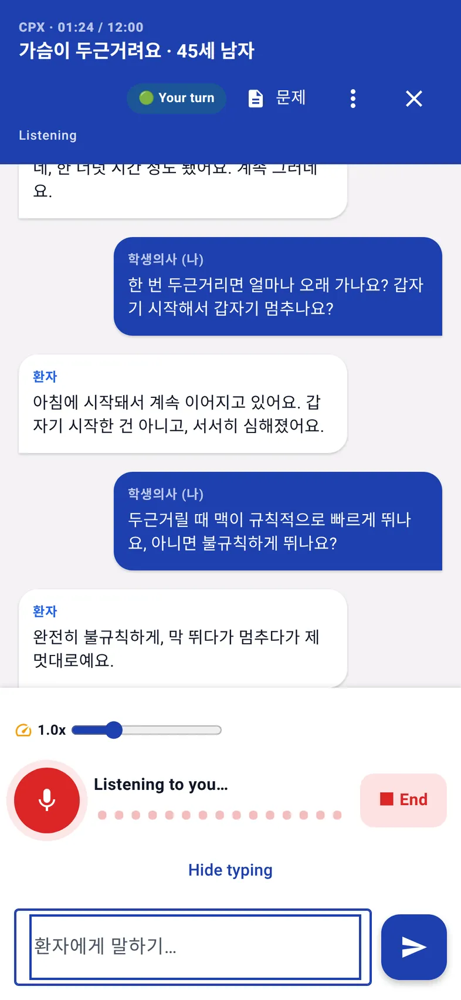

홈 › KMLE CPX 연습 › 2026 실기시험 형식
시험 형식
2026 의사 국가시험 실기시험(CPX) 형식 정리
의사 국가시험 실기시험은 10개 스테이션을 각 12분씩 도는 시험이다. 9개는 표준화 환자를 만나는 진료문항(CPX), 1개는 기본진료술기(OSCE)다. 2026년 7월 1일부터 문제지가 시험실 안에만 게시되고 주호소가 적혀 있지 않다.
한눈에 보기
| 스테이션 | 10개, 각 12분, 각 100점 |
|---|---|
| 구성 | 진료문항(CPX) 9개 + 기본진료술기(OSCE) 1개. 2021년 하반기 개편 이후 유지 |
| 출제 범위 | 진료문항 48개 임상표현 (이전 54개 항목 목록을 대체) |
| 문제지 | 2026-07-01부터 시험실 안에만 게시, 주호소 없음. 읽는 시간도 12분에 포함 |
| 안내 방송 | "종료 2분 전", "시험 종료". 종료 후 남아 있으면 0점 |
| 채점 | 표준화 환자가 환자-의사 관계(PPI) 6개 영역을 4단계로 평가, 체크리스트는 별도 채점 |
| 합격 | 총점이 스테이션별 기준 점수의 합 이상이고, 통과 스테이션 수도 기준 이상 |
문제지: 주호소가 없다
2026년 7월 1일부터 문제지는 시험실 밖 문 앞이 아니라 시험실 안에 게시되고, 환자가 왜 왔는지(주호소)가 적혀 있지 않다. 문제지에 남은 것은 환자의 나이와 성별, 장소, 활력징후, 그리고 해야 할 일이다.
문제 (제한시간 12분)
○○세 여자 ○○○ 씨가 외래에 왔다.
[활력징후] 혈압 · 맥박수 · 호흡수 · 체온
응시자는 이 환자에게
– 증상과 관련한 병력을 청취하고,
– 증상과 관련한 신체진찰을 시행하고,
– 추정진단과 향후 계획을 환자와 논의하시오.
이 변화가 연습에 주는 영향은 세 가지다.
- 입실 전에 감별진단을 미리 떠올릴 수 없다. 주호소는 환자에게 "어디가 불편해서 오셨어요?"라고 물어야 알 수 있다.
- 문제지를 읽는 시간이 12분에서 빠진다. 활력징후에서 이상 소견을 빠르게 잡는 연습이 필요하다.
- 증상이 여러 개일 수 있다. 처음 들은 증상 하나로 범위를 좁히지 말고 다른 불편은 없는지 확인한다.
12분을 쓰는 법
스테이션마다 "종료 2분 전" 안내가 나오고, 12분이 되면 "시험 종료" 안내가 나온다. 종료 안내 뒤에도 시험실에 남아 진행하면 그 스테이션은 0점이다.
세 과제(병력 청취, 신체진찰, 추정진단과 계획 논의)를 모두 해야 하므로, 2분 전 안내가 나올 때 아직 설명을 시작하지 못했다면 진찰을 접고 환자 교육으로 넘어가는 것이 낫다. 과제별 시간 배분은 정해진 규정이 없으므로, 타이머를 켜고 연습하면서 자기 속도를 찾는다.
채점
진료문항 스테이션에서는 표준화 환자가 환자-의사 관계(PPI)를 6개 영역에 대해 4단계(미흡 · 보통 · 우수 · 아주 우수)로 평가하고, 병력 · 신체진찰 · 환자 교육 체크리스트가 따로 채점된다. 체크리스트의 항목과 배점은 공개되지 않는다.
PPI 영역별 내용은 환자-의사 관계(PPI) 6개 영역에 정리했다.
합격 기준
합격하려면 두 조건을 모두 충족해야 한다.
- 총점이 응시자가 치른 스테이션 조합의 합격선 이상일 것. 합격선은 각 스테이션 기준 점수의 합이며, 스테이션별 기준 점수는 공개되지 않는다.
- 통과한 스테이션 수가 기준 이상일 것.
예를 들어 제89회 시험에서는 총점 기준이 1000점 만점에 718점, 통과 스테이션 기준이 10개 중 6개였다. 응시자마다 만나는 스테이션 조합이 달라 합격선도 달라지므로 이 숫자는 참고용이다.
이 형식 그대로 연습하려면
Bedside English의 한국 CPX 트랙은 위 문제지 양식을 그대로 쓴다. 주호소는 문제지에 없고 AI 환자가 직접 말하며, 12분 타이머가 "종료 2분 전"과 "시험 종료"를 알린다. 실전 모의고사는 서로 다른 임상표현 9개를 연속으로 치르고 결과를 마지막에 보여 준다. 합격 판정은 고정 기준선(총점 72% 이상, 스테이션의 60% 이상 통과)으로 낸 추정치이며 실제 기준과 다르다.


무료로 연습하기
웹 앱이라 아이폰·아이패드·PC·안드로이드 브라우저에서 바로 연다. 설치·가입·구독·광고 없음. 무료 Gemini API 키로 동작한다.
다음 글: CPX 48개 임상표현 목록 →